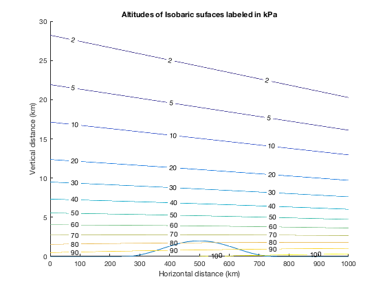
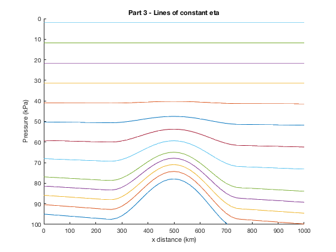
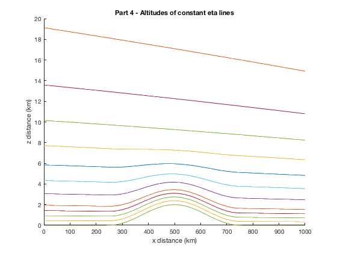

Rachel Steinhart ATSC 507 Homework 1 January 22st, 2020
Contents
clear all close all
Inputs
xkm = 0:20:1000; zkm = 0:0.001:30; pi_top = 2; eta_c = 0.3; a = 0.0293; P = [100 90 80 70 60 50 40 30 20 10 5 2]; eta = [1, 0.95, 0.9, 0.85, 0.8, 0.7, 0.6, 0.5, 0.4, 0.3, 0.2, 0.1, 0];
Question 1
%Find: On an x-z graph, plot the altitudes (km) of the following isobaric surfaces: %100, 90, 80, 70, 60, 50, 40, 30, 20, 10, 5, 2 kPa. %On the same plot, plot the altitude of Zground.
Temperature
%This loop creates a [31,51] matrix where each row represents the %temperatures across x for one z value T_matrix = zeros(length(zkm),length(xkm)); for i=1:length(zkm) zkm_calc = zkm(i); if zkm_calc < 12 T = (40 - 0.08.*xkm) - 6.5*zkm_calc + 273; %K else T = (40-0.08.*xkm) - 6.5*12 + 273; %K end T_matrix(i,:) = T; end
Pressure
Pressure = zeros(length(zkm),length(xkm)); Pms1 = 95 + 0.01.*xkm; Pressure(1,:) = Pms1; for j=1:length(zkm)-1 P2 = Pressure(j,:).*exp((zkm(j) - zkm(j+1))./(a.*T_matrix(j+1,:))); Pressure(j+1,:) = P2; end
Zground
Zground=zeros(1,length(xkm)); for j=1:length(xkm) %xkm_calc=xkm(j); if 250 < xkm(j) && xkm(j) < 750 Zground_km = 1 + cos(2*3.14159.*(xkm(j) - 500)/500); else Zground_km = 0; end Zground(1,j)=Zground_km; end
Plot Altitudes
figure(1) hold on plot(xkm,Zground); [C,h]=contour(xkm,zkm,Pressure,P); clabel(C,h) xlabel('Horizontal distance (km)'); ylabel('Vertical distance (km)'); title('Altitudes of Isobaric sufaces labeled in kPa');
Question 2
Interpolate to find the Psurface (kPa) pressure at Zground. Namely, it is the pressure that corresponds to eta = 1.
%This pressure that you use to find eta in exercises (3) & (4).
Surface Pressure 2
z1 = 0; Psfc = Pms1.*exp((z1 - Zground)./(a.*T_matrix(1,:))); Table = [xkm(:), Zground(:), Psfc(:)]; Table = Table.'
Table =
1.0e+03 *
Columns 1 through 7
0 0.0200 0.0400 0.0600 0.0800 0.1000 0.1200
0 0 0 0 0 0 0
0.0950 0.0952 0.0954 0.0956 0.0958 0.0960 0.0962
Columns 8 through 14
0.1400 0.1600 0.1800 0.2000 0.2200 0.2400 0.2600
0 0 0 0 0 0 0.0000
0.0964 0.0966 0.0968 0.0970 0.0972 0.0974 0.0975
Columns 15 through 21
0.2800 0.3000 0.3200 0.3400 0.3600 0.3800 0.4000
0.0001 0.0002 0.0004 0.0006 0.0008 0.0011 0.0013
0.0970 0.0958 0.0941 0.0919 0.0894 0.0869 0.0844
Columns 22 through 28
0.4200 0.4400 0.4600 0.4800 0.5000 0.5200 0.5400
0.0015 0.0017 0.0019 0.0020 0.0020 0.0020 0.0019
0.0822 0.0804 0.0790 0.0781 0.0779 0.0782 0.0792
Columns 29 through 35
0.5600 0.5800 0.6000 0.6200 0.6400 0.6600 0.6800
0.0017 0.0015 0.0013 0.0011 0.0008 0.0006 0.0004
0.0807 0.0828 0.0853 0.0882 0.0912 0.0942 0.0970
Columns 36 through 42
0.7000 0.7200 0.7400 0.7600 0.7800 0.8000 0.8200
0.0002 0.0001 0.0000 0 0 0 0
0.0994 0.1012 0.1023 0.1026 0.1028 0.1030 0.1032
Columns 43 through 49
0.8400 0.8600 0.8800 0.9000 0.9200 0.9400 0.9600
0 0 0 0 0 0 0
0.1034 0.1036 0.1038 0.1040 0.1042 0.1044 0.1046
Columns 50 through 51
0.9800 1.0000
0 0
0.1048 0.1050
Question 3
%Create a new P-x graph, on which you plot lines of constant eta, for the eta values listed below. %Namely, it should look something like WRF4 figure 2.1b, but with the more realistic meteorology that I prescribed above. %Also, like that figure, plot pressure P on the vertical axis in reversed order (highest pressure at the bottom of the figure), %but don't use a log scale for P. %CAUTION: when calculating the values of B to use in WRF4 eq. (2.2), %be advised that WRF4 eq. (2.3) applies only for eta > eta_c. Otherwise, set B = 0 for eta <= eta_c.
Lines of constant eta
c1 = 2*eta_c^2/(1-eta_c)^3; c2 = -eta_c*(4 + eta_c + eta_c^2)/(1-eta_c)^3; c3 = 2*(1+eta_c+eta_c^2)/(1-eta_c)^3; c4 = -(1+eta_c)/(1-eta_c)^3; B = zeros(1,length(eta)); for l=1:length(eta) etacalc = eta(l); if etacalc > eta_c B1 = c1 + c2*etacalc + c3*etacalc^2 + c4*etacalc^3; else B1 = 0; end B(1,l)=B1; end Pd = zeros(length(B), length(xkm)); for q=1:length(B) Pd_calc = B(q).*(Psfc-pi_top) + (eta(q)-B(q)).*(100-pi_top) + pi_top; Pd(q,:) = Pd_calc; end
Plot Eta lines
figure(2) hold on for m=1:length(eta) plot(xkm,Pd(m,:)) set(gca, 'YDir','reverse') xlabel('x distance (km)'); ylabel('Pressure (kPa)'); ylim([0 100]); title('Part 3 - Lines of constant eta') end
Question 4
%Create a new z-x graph, on which you plot the z altitudes of the constant %eta lines for the same eta values as in part (3) above. Make use of the hypsometric eq %to find the heights z at the pressure levels that correspond to the requested eta values.
Pressures associated with eta lines
alt_eta = zeros(length(eta),length(xkm)); z_eta(1,:) = Zground; alt_eta(1,:)=z_eta(1,:); for k=2:length(eta) z_eta(k,:) = (-log(Pd(k,:)./Pd(k-1,:))*a.*T_matrix(k,:)) + z_eta(k-1,:); end
Plot Eta lines
figure(3) hold on for m=1:length(eta) plot(xkm,z_eta(m,:)) plot(xkm,Zground) ylim([0 20]) xlabel('x distance (km)'); ylabel('z distance (km)'); title('Part 4 - Altitudes of constant eta lines'); end